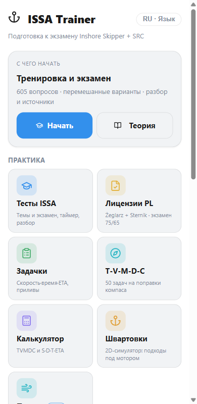
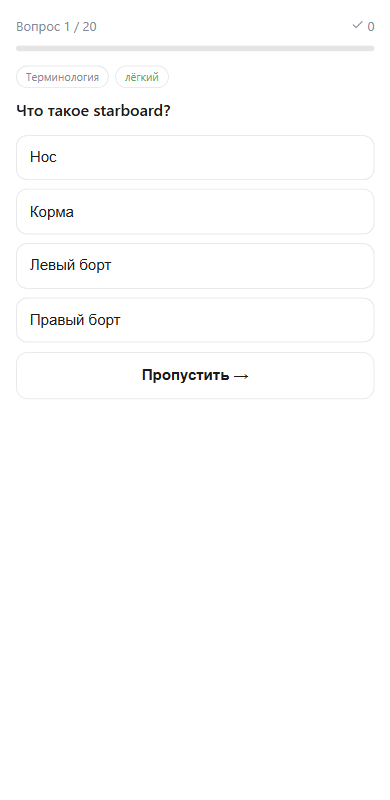
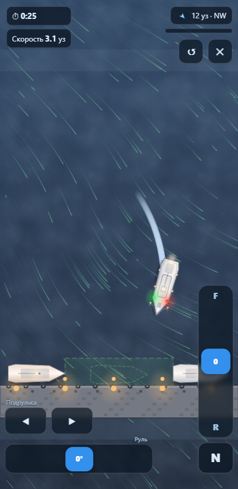
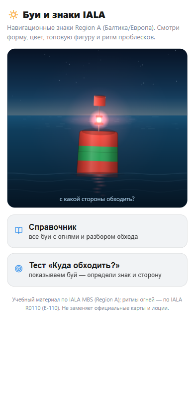
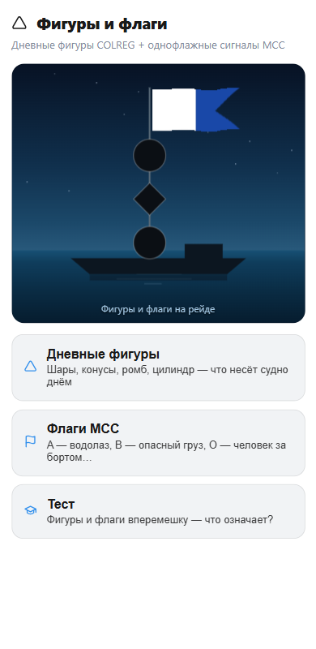
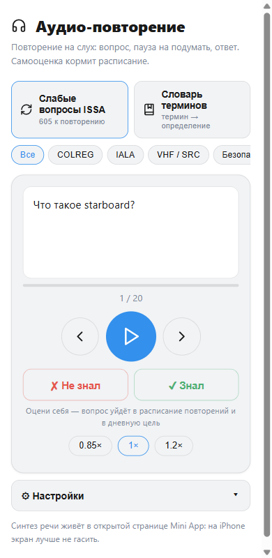

Что внутри
Не сборник вопросов, а полный тренажёрный зал шкипера
Темы по порядку, случайная тренировка, режим «различение» для похожих вопросов — кардинальные знаки и огни рядом, чтобы перестать их путать.
100 вопросов, таймер, проходной балл 90% — репетиция без нервов и по-честному.
Система SRS возвращает вопрос ровно тогда, когда он вот-вот забудется. Ошибки попадают в журнал и дожимаются отдельно.
Билеты Żeglarz jachtowy и Sternik motorowodny с переводом: привыкаешь к экзаменационным формулировкам заранее.
Интерактивные тренажёры: буй мигает своей характеристикой на ночном море, огни судов собираются в картинку — учишься читать море, а не зубрить.
2D-физика: инерция, ветер, заброс винта, течение. Яхта, катамаран или катер; лагом, в бокс между сваями или кормой. День, ночь, дождь и туман.
Вопросы и термины читает нейроголос: вопрос → пауза на подумать → ответ. Самооценка «знал / не знал» кормит расписание повторений.
Поправки компаса T-V-M-D-C, задачи на скорость-время-расстояние, приливы, морской калькулятор.
16 тем по учебнику, 182 морских термина, шпаргалка, дневные фигуры и флаги МСС.
Готовность к экзамену по темам, дневная цель, серия дней, достижения — видно, где слабина и сколько осталось.
Русский, польский, украинский, английский. Учебный контент — на русском.
PWA-кэш: страницы и вопросы работают без сети — тренируйся хоть на переходе.
Как это выглядит
Живые экраны приложения






Почему это работает
Пауза «на подумать» перед ответом заставляет мозг доставать знание, а не узнавать его. Так запоминается в разы прочнее.
Каждый ответ двигает вопрос по коробкам Лейтнера: выученное не мозолит глаза, забываемое возвращается вовремя.
Буи мигают, огни плывут в темноте, лодка дрейфует под ветром — навык складывается из практики, как в море.